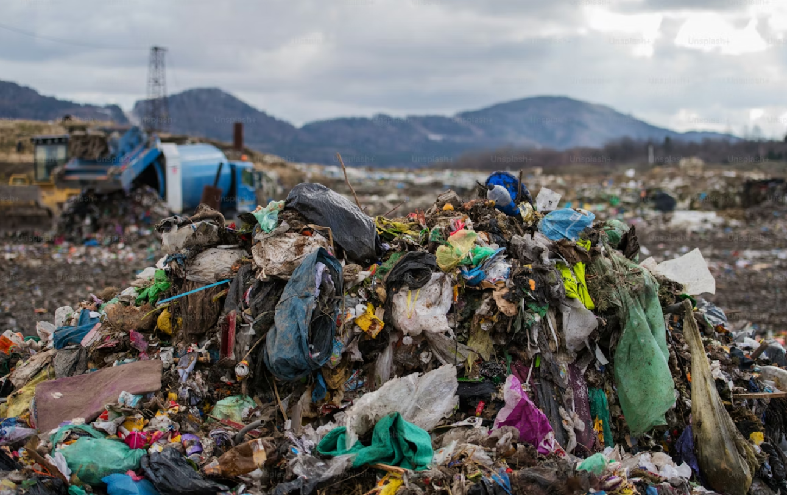

What are the main causes of domestic waste?
- Packaging: This drives domestic waste through single-use designs and e-commerce shipping materials, which mostly end up in landfills due to low recycling rates.
- Lack of awareness: Consumers unknowingly throw away recyclable materials, misinterpret food expiration dates, and buy disposable products without understanding their environmental damage.
- Over-consumption: Buying cheap, short-lived products and unnecessary goods lead households to quickly discard massive amounts of excess trash.
- Lack of recycling: inadequate local facilities, high processing costs, and cross-contamination force valuable materials directly into landfills or incinerators.